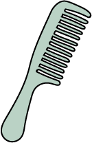

CAT ARCHIVES
Cat Grooming Tips
How Often to Groom
Most cats benefit from brushing a few times a week, though some enjoy it daily. Regular grooming helps reduce shedding, prevents mats, and keeps their coat healthy. It also gives you a chance to check for any changes in their skin or fur, which can help you catch issues early.

Brushing Longhair vs Shorthair
Longhaired cats need more frequent brushing, usually every day or every other day, to prevent tangles and mats from forming. Use a wide-tooth comb or a detangling brush for best results. Shorthair cats don’t tangle as easily, so brushing them a couple of times a week is usually enough to remove loose fur and keep their coat shiny.
Why Cats Shed
Shedding is a normal part of a cat's life cycle, helping them replace old or damaged fur. Seasonal changes, temperature, stress, and their overall health can affect how much they shed. Regular grooming reduces loose hair, keeps your cat comfortable, and helps limit fur around your home.